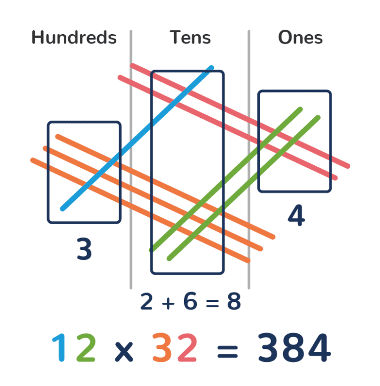
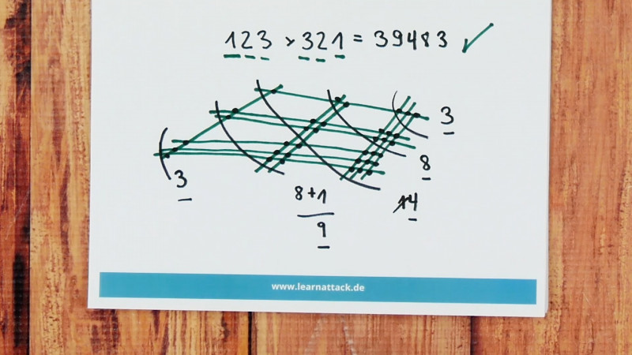

Note: You can click and drag the numbers up and down to change what you're multiplying.
May 2022
Cracker Multiplication is a program that visualizes long multiplication using the holes in a cracker. It splits the width and height of the cracker by the ones and tens place.
For example, in the above graphic, 12 * 15 is split into (10 + 2) * (10 + 5)
This shows how the standard Western method of doing long multiplication works: it's just a way to break down the problem (like 12 * 15) into smaller problems (like 10 * 10, 10 * 2, 10 * 5, and 2 * 5) that you can solve if you know your times tables, and summing up the results.
When I learned long multiplication in school, I was taught how to do it, but I didn't understand why the method works the way it does. I thought it was confusing, and for years, I kept forgetting how to do it, because I didn't understand it.
Some cultures teach other ways to do long multiplication, like this one from Japan. It might look a little bit confusing at first, but it's actually very straightforward:
 Read about the Japanese methodIt even works for numbers with more than two digits:
 Read about multiplying 3 digit numbersMaybe the Japanese method gives students a better understanding of the way that long multiplication breaks down a problem by digit places.